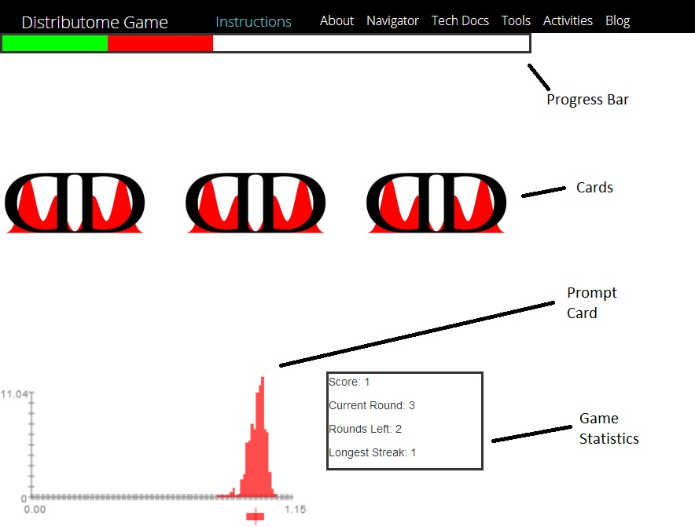

The objective of this game is to score the most amount of points by choosing the card (density graph) that matches the given density curve name/histogram
This game requires 1 player
A typical gameboard is shown below:
Prompt Card:Shows the criteria for selecting the density curve
Progress Bar: Show the number of rounds that have been finished,
as well as the proportionate amounts of correct and incorrect answers
Cards: Shows the pool of density curves among which the correct card must be selected
Game Statistics: Shows scores as well as various statistics for the game
This game is a variation of the 3 card monte, also known as the 3 card game or 3 shell game. The game begins when the start button is pressed. Afterwards, all cards on the field are flipped face up for a brief interval in order to reveal each card's density curve. Next, all cards are once again flipped face down, and around on the board. Once the cards have finished being shuffled, the prompt square will either ask for a certain distribution by name or by its corresponding histogram, depending on the mode that is currently selected. Once a card has been selected, the appropriate amount of points will be added to the player's score, and the next round will begin. Gameplay ends when when the preselected number of rounds have passed
Players recieve 1 point per each correct answer. No points are deducted for incorrect answers
The game ends after the preselected number of rounds
The following options can be configured before pressing the start
button:
Number of Cards: Determines the number of cards that will be on the board
Matching Mode: Determines whether density graphs will be selected based on name or corresponding distribution histogram
Game Type: Determines the pool that the graphs will be drawn
from.
Game Length: Determines the length of each round
Game Speed: Determines the number of rounds in the game